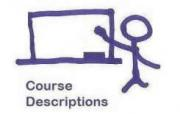
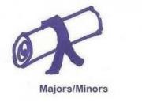
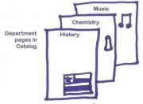
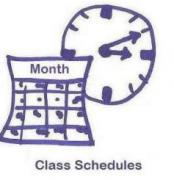
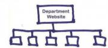

How to publish your university catalog and class schedules online using the Cascade Server CMS
Over the last 2 years, Emory College has used Cascade Server to publish our academic catalog and semester class schedules to the web. Learn the trials, tribulations, and successes we've encountered along the way with data definitions, indexing, and web services.
Updates: Latest versions of Faculty bio code in August. Notes on further indexing-related changes and print-version styles explained via comment in April. Data definitions and stylesheets in February.
This presentation was given by Adelle Frank and Brian Williams at the Cascade Server User Conference, in Atlanta, GA on September 13, 2010. You can also view this presentation on Slideshare and watch the video at Hannon Hill.
- A. Where we Were
- B. Why we put our Catalog & Class Schedules online
- C. Big Dreams
- D. Obstacles: Known
- E. Obstacles: Unknown
- F. Where we are Now
- G. Potential Future Plans
- H. Main Take aways
- I. Building & Coding Details
- J. Video of Presentation
- For more information
A. Where we started
- Catalog: Quickly-outdated print/PDF versions
- Class schedules: in a quickly-outdated print format or in scattered, non-standard HTML pages on non-centralized departmental websites
B. Why we put our Catalog & Class Schedules online
- Jealousy of Univ. of Richmond's 2008 presentation of their catalog in Cascade.
- $$. Printing costs were high, and the economic recession was not kind to our budget.
- Usability. To make our catalog and class schedules easier to use and to keep updated.
C. Big dreams
- Centralization. It will be possible to search, edit, and analyze one location.
- Connected, share-able data model. Data should not need to be repeated, but should be linked to (i.e. shared) so that it can be maintained only once, but be up to date everywhere.
- Consistency & quality control. The ability to use the same content in multiple places, but with the same fields, creates a more consistent experience for users and encourages quality control by distributed users.
- Archiving. Create a CD copy of the catalog for non-internet-connected or IP-blocked users and archive both catalog and class schedules with the library in a static HTML format.
- Content editing. Content should be easy to maintain and editable by numerous content owners.
D. Obstacles we already knew about
- No authoritative feed from PeopleSoft database, only manual .CSV downloads and uploads.
- Steep web services learning curve.
- Catalog & website have intermingled content, so linking & archiving must be carefully planned.
- Few standard structures exist for data, so need to create content type structures.
- Standard naming & paths are needed to enable both Web services creates & easy XSL styling.
- Limited resources & time (1 year!)
- Manual data entry of catalog information (Thank you administrative assistants & student workers!!)
- Initial lack of editor training materials, which would be key to a successful adoption of this new system.
- Class schedules training document: http://college.emory.edu/home/assets/documents/web/course_atlas_edit_guide.pdf
- Basic Cascade training videos
E. Obstacles we found out about
- Asset-render-depth in connected data definitions can lead to infinite loops.
- Index block settings & render time: content type for choosing specific blocks & automated block creation
- Weird data quirks: Interdisciplinary classes; Faculty married vs. professional names; class schedules for multiple times, locations, instructors
- User needs: rollover data from semester to semester for class schedules, so don’t have to re-type.
- Web services + large publish jobs = SLOWNESS for all
- “Variable” is really a CONSTANT in XSL (Muenchian grouping SAVES LIVES!)
- Hidden fields not so hidden. Can’t make forms user-friendly.
- Users find it un-intuitive to upload a file/image BEFORE they can include it on a page; BUT we want control over parent folder placement.
- Don’t move or re-name data definition fields OR ELSE … lose data & must re-write web services scripts
- Permissions: granularity is challenging
- Index metadata ONLY (not page XML inline), for detailed, numerous content.
- Use a workflow for large folders to auto publish only pages that are changed, rather than slowing down the system by publishing all 1,800 class section pages every night, regardless of whether they've changed.
F. Where we are now
- Catalog online in a Site using version 6.7 at http://college.emory.edu/catalog
- 5 Semesters of class schedules up in Cascade at http://college.emory.edu/home/academic/course/schedules (as of February 2011).
- Sharing course descriptions, class schedules, and faculty bios into Departments that are in Cascade http://filmstudies.emory.edu (already seeing quality payback, as departments are noticing errors in catalog data because it lives on their site, too).
- Saving beaucoup $$$ with online-only catalog and class schedules.
- Lost main Communications and content coordinator (!), quality checks are not occurring in as organized a fashion.
- After just 1 semester of use, we got a really positive response to the online catalog and class schedules from students, faculty and staff.
- No longer use paper publications, just mail out a postcard with the catalog URL or, for non-internet audience or IP-blocked Chinese students, a CD-ROM (using a separate, manually-activated Page Configuration & Publish Set).
- Analytics easier, since all content is in one location.
G. Potential future plans
- Change the way we do class schedules:
- use a feed from Peoplesoft
- Rollover default textbooks/descriptions
- Archive catalog and class schedule versions with Library in a digital format (HTML or PDF/A).
- Improve searching after College site is re-designed, as the redesign has now addressed the need for easier navigation.
- Refine content types
- Department (brevity)
- Major/Minor (more structured)
- Faculty (additional XSL for display; pull in faculty publications feed from annual reporting software)
- Scholarships (create structure)
- Create XSL transports to PDF or Word, for easier printing.
- Create more training (videos & documentation) for end users, especially re: HTML.
- Share
- class section pages on Faculty and course description pages.
- majors/minors with Departmental web sites in Cascade.
- Hire person to update catalog content (and have them document how its done, both technically and in terms of business process/deadlines).
- Create web services scripts to automate provisioning of Departmental websites with College-specific additions.
- Consider imitating functionality in Cal State's catalog at: http://catalog.csumb.edu/undergrad-education for majors and minors.
H. Main take-aways
- Choose a dedicated person (or persons) to update and quality-check your content.
- Prioritize which content you’ll structure first (since you can’t do it all).
- Consider frequency of updates in whether a data-heavy project should go into Cascade or not.
- Consider usability for editors when designing workflows, data definition field order, & training.
- Be wary of indexing, metadata, recursion and overwhelmed publish queue issues.
- Plan your naming & organization schemes in the BEGINNING (and be consistent).
- Invest in acquiring web services and XSL coding skills.
- Get to know your data (& data owners) in the BEGINNING.
- Attend to critiques of online catalogs at http://doteduguru.com/id5549-online-cataloging-done-right.html
I. Building & coding details

This work is licensed under a Creative Commons Attribution-ShareAlike 3.0 Unported License.
1. Data model
The purple lines indicate current connections or links between content types.
The red lines indicate possible future links between content types that might be helpful to end users.
{kind=link}
2. Course descriptions
- Source for structure ideas: Postsecondary Electronic Standards Council, Course Inventory Workgroup Strawman; and fields arising from the descriptions as they already existed in the catalog.
- Plans: Would like to link them to class schedule sections, so students could look over past offerings by different instructors.
- Data definition: /sites/default/files/course_description_data_definition.xml
- XSL Stylesheets:
3. Majors & minors

- Source for structure ideas: couldn’t find any related standards, so based on catalog (mostly text) and chunking data up somewhat.
- Fields added:
- Hours to complete
- Type of degree/certification received
- Registrar’s code
- Plans: Add asset link for Major/Minor declaration form and revise structure to create more of a standard.
- Data definition: /sites/default/files/major_minor_data_definition.xml
- XSL Stylesheets:
4. Faculty page
- Source for structure ideas:
- http://www.hr-xml.org/hr-xml/wms/hr-xml-1-org/index.php?language=2
- Survey of other school’s faculty bio pages.
- Plans: Work to get more data entry by data owners, hopefully by sharing them on departmental web sites.
- Latest code (August 2011): /sites/default/files/faculty_bios.zip
- Data definition: /sites/default/files/person_data_definition.xml
- XSL Stylesheet: /sites/default/files/person_faculty_stylesheet.xsl
5. Department page

- Source for structure ideas: couldn’t find any related standards, so added generic fields, based on catalog "structure" and linking to other content types.
- Plans: revise structure to make a more modular entry form, with less unnecessary fields for users to look through. Considering changing the course listing to include index blocks (as in the class schedule listings), so that manual addition of new courses is not needed. Hide faculty whose bio pages have been archived.
- Data definition: /sites/default/files/department_data_definition_2.xml [Updated 2010-10-11]
- XSL Stylesheets:
6. Class section schedule

- Source for structure ideas: Postsecondary Electronic Standards Council, Course Inventory Workgroup Strawman, 04-07-2008; survey of current schedule pages & other school’s online schedules (such as https://www.untecampus.com).
- Much of the “automated” data ended up in the metadata, instead of the data definition (different use of “metadata” than I expected - not fitting neatly into structural/administrative/descriptive categories and not hierarchical).
- Metadata:
- Plans: If we can get a feed, considering still using Cascade for data owner additions, but doing a PHP include of the feed data for the authoritative time/date/etc. so that it's always up to date without manual effort. Would like to be able to roll over default textbooks/descriptions, too, in order to save data owners from duplication of effort. In addition, we'd like to improve the navigation and searching for these schedules, as well as implement a Workflow so that our Publish queue need not publish all 1,800 sections every night, but will automatically publish an individual section as soon as it is edited and saved.
- Structures:
- Data definitions:
- XSL Stylesheets:
{kind=link}
{kind=link}
{kind=link}
{kind=link}
7. Department web site

- Source for structure ideas: Survey of current departmental web sites organization, survey of departmental websites of peer institutions, consideration of content types available from catalog and class schedules.
- Plans: May create web services scripts to automate the addition of our various content types to departmental web sites. Would like to add majors/minors, eventually, for the quality assurance this would add.
- Data definitions:
- XSL Stylesheet: /sites/default/files/class_sections_shared_with_department_site.xsl
8. Web services
- Plans: automate the creation of shared, College-specific content types onto departmental websites.
- Scripts: /sites/default/files/web_services_example.zip
- Documentation:
J. Video of Presentation
K. For More Information
- http://www.hannonhill.com/kb/Data-Definitions/data-def-schema-reference/index.html
- http://www.hannonhill.com/kb/Available-System-Tags/index.html
- http://www.hannonhill.com/kb/Code-Sections/index.html
- http://www.hannonhill.com/news/blog/2008/Muenchian-Grouping-in-Cascade-Server.html
- http://www.hannonhill.com/kb/Index-Block/#indexed-asset-content
Comments
Adelle Frank
Different XSL for Archival Copy/Print
We also realized that the Archival copy of the catalog, destined partially for a printable PDF, didn't need 1,400 pages of faculty bios. Instead, we created a separate XSL to display a list of all faculty with only essential information such as:
Likewise, instead of 2,500 individual course descriptions, we created an XSL to create lists of all courses for an individual subject.
Adelle Frank
Removing asset links to department pages & moving data fields
The indexing problem we mentioned got even bigger for us whenever we tried to index the department pages inline. To address this we made the following changes:
Adelle Frank
Feedback during Q&A session at Conference
A number of y'all had BRILLIANT things to ask and share during the Question and Answer time after our presentation. Thanks!
Here is a selection of the things I can remember: